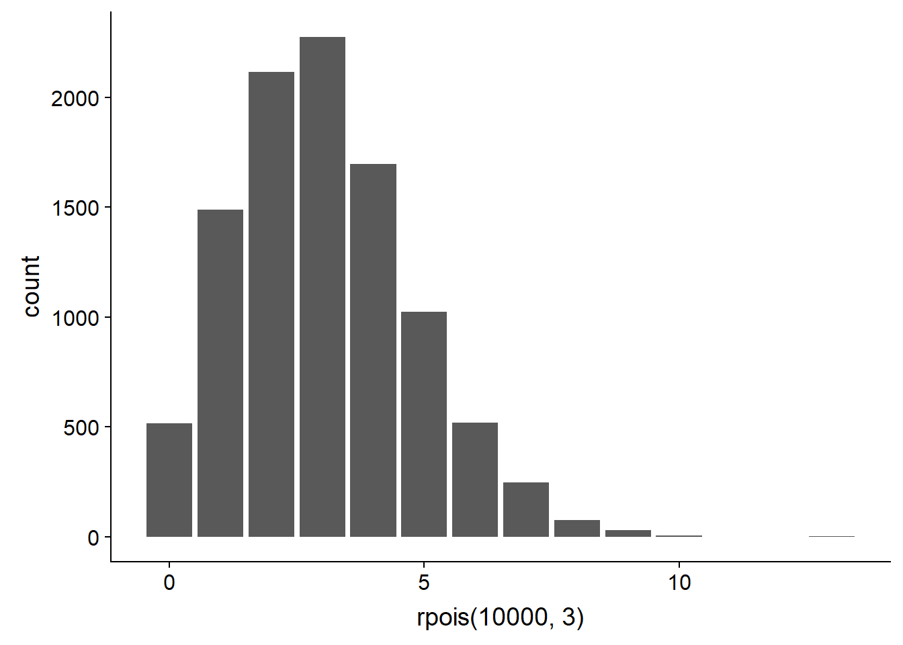
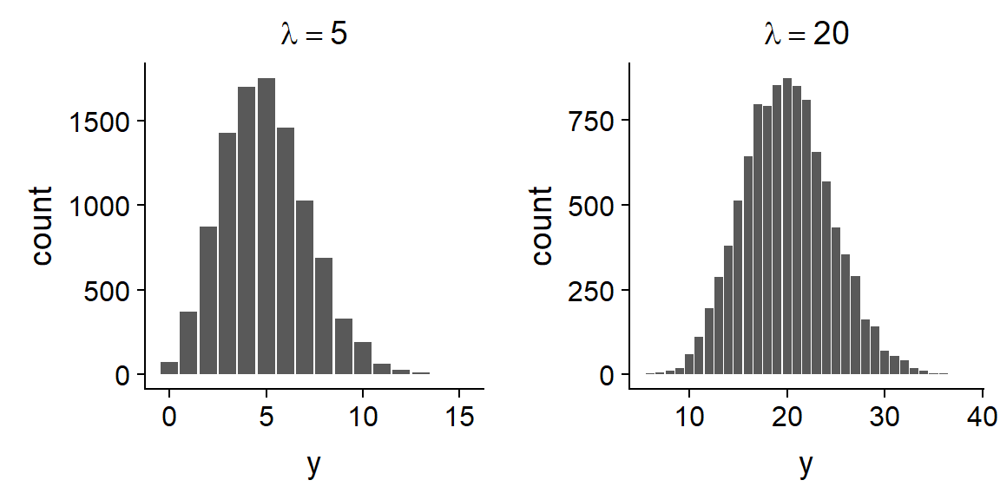
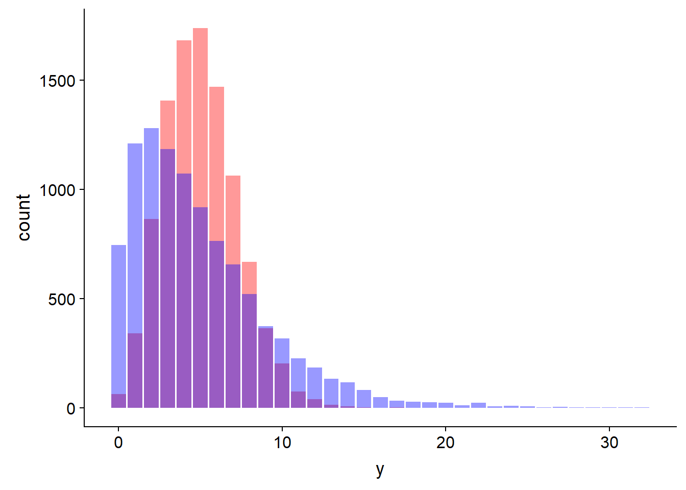
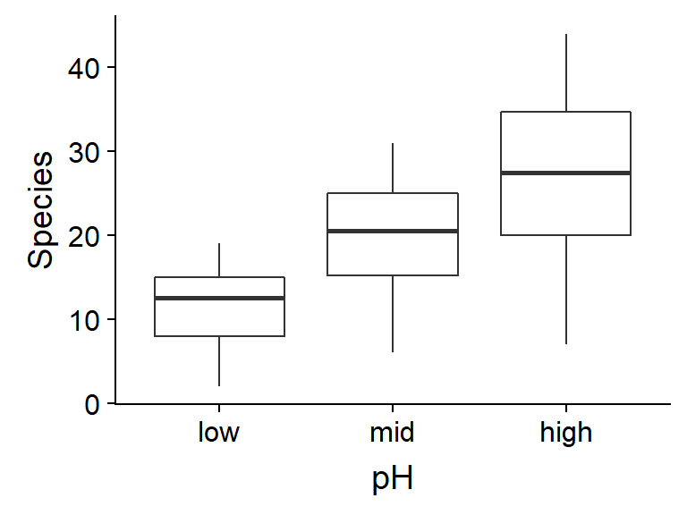
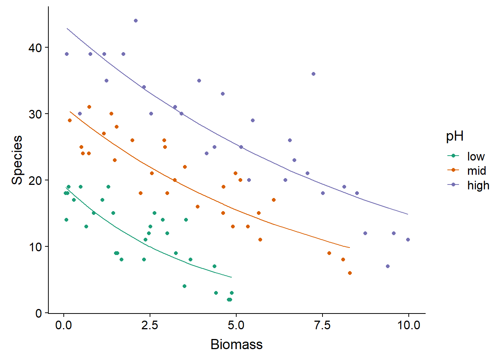
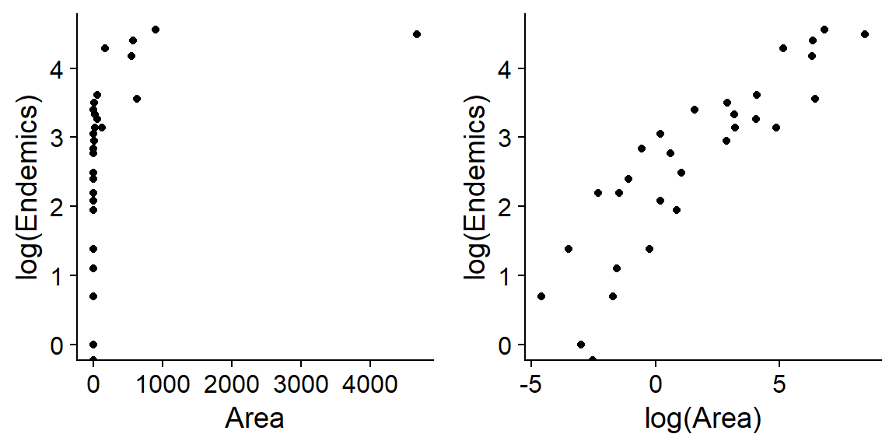

Poisson regression
November 8, 2021
Objectives
Know when and how to use a generalized linear model with a Poisson distribution.
Detect overdispersion in a generalized linear model.
Adapt the estimation of parameters and the selection of models to the case of overdispersed models.
Introduction
At the last class, we applied logistic regression to the analysis of binary and binomial data. In this course, we will see another type of generalized linear model, Poisson regression, which is used to model the number of observations of a certain event in a defined sampling unit.
Here are some examples of this type of data in ecology:
- the number of seedlings of a species in several quadrats;
- the number of species (species richness) observed at different sites;
- the number of individuals of a species of bird heard in a certain period of time during different visits to a site.
Or in other areas:
- the number of patients arriving at the emergency room per hour;
- the number of cars crossing an intersection per minute.
Count data properties
The count data are discrete numbers \(\ge\) 0; we can have 0, 1, 2, … observations, but not -1 or 1.5.
When the mean number of observations is small, the distribution of observations is generally asymmetric (e.g. if the mean is 1, some sites will have more than 2, but never 0).
The variance of the number of observations tends to increase with the mean: for example, if we observe a mean of 1 species of mushroom per plot of 10x10m, the observations will vary perhaps between 0 and 3, but if we observe a mean of 10, the observations could vary between 6 and 15.
These properties justify the use of a distribution different from the normal distribution to model the observed response: the Poisson distribution.
Poisson distribution
Suppose that the response \(y\) represents the number of observations of an event in a given interval (interval of time, length, area, etc.). Suppose moreover that these events are independent, that is to say that the observation of a first event does not influence the probability of observing a second one or not.
In this case, the variable \(y\) follows a Poisson distribution, with a parameter \(\lambda\) representing the mean rate of observations per interval. The probability of a certain value of \(y\) as a function of \(\lambda\) is given by the following equation.
\[ P(y | \lambda) = \frac{\lambda^y}{y!} e^{-\lambda} \]
The Poisson distribution has only one parameter: \(\lambda\) corresponds to both its mean and its variance (so the standard deviation is \(\sqrt{\lambda}\)).
In R, the rpois function can generate data according to a Poisson distribution, and dpois gives the probability of a given value of \(y\) according to the above equation.
# Barplot with 10000 values drawn from the
# Poisson distribution with lambda = 3
ggplot(NULL, aes(x = rpois(10000, 3))) +
geom_bar()
# Probability of y = 1 if lambda = 3
dpois(1, 3)## [1] 0.1493612Comparison with the binomial distribution
For the binomial distribution, we had a positive or negative response for each individual (or sample unit) and we were trying to predict the probability of a positive response \(p\).
In the Poisson distribution, the response is the number of observations per sample unit and we try to predict the mean of that number.
If we have a binomial response that is rare at the individual level (\(p\) is small) and the population \(n\) is large, then we can model the number of cases at the population level by a Poisson distribution with \(\lambda = np\).
Example: We are studying a birch forest where chaga is present on a small proportion (e.g. ~ 1%) of trees. Instead of counting birch trees affected and unaffected by the chaga, one could only count the number of chaga conks in plots of a given size and model that number with a Poisson distribution.
Comparison with the normal distribution
When \(\lambda\) is large enough, the Poisson distribution becomes more symmetrical and approaches a normal distribution.

In other words, if the mean is large enough, the number of observations behaves almost like a continuous variable following a normal distribution with \(\mu = \lambda\).
In that case, the linear regression model could apply. However, keep in mind that each model makes different assumptions about the variance of the response. In the linear regression model, the mean \(\mu\) depends on the predictors, but the variance \(\sigma^2\) is constant. In the Poisson regression model, the mean and the variance depend on the predictors, because they are both equal to \(\lambda\). Diagnostic plots can tell you which model is the most appropriate.
Independence of observations and overdispersion
As mentioned above, the Poisson distribution assumes the independence of individual observations. It is rare that this condition is perfectly respected in nature. For example:
- the probability of seeing a seedling of one species increases near other seedlings (agglomeration) if the seeds are dispersed in groups near the parent;
- the observation of a species on a plot affects the likelihood of observing others based on competition or facilitation relationships between these species.
Failure to meet the assumptions of the Poisson distribution can lead to overdispersion of observations, i.e., more extreme values are observed than predicted by the Poisson model. In the first example above, agglomeration results in more plots with 0 seedlings and more plots with a large number of seedlings.
In the graph below, the bars in red follow a Poisson distribution while the bars in blue represent a case of overdispersion. The mean of \(y\) is 5 in both cases.

We will see later how to identify and address cases of overdispersion.
Poisson regression
Poisson regression is a generalized linear model where the response \(y\) follows a Poisson distribution:
\[ y \sim Pois(\lambda) \]
Since \(\lambda\) must be a positive number, we use the log function as a link with the linear predictor.
\[ \log{\lambda} = \eta = \beta_0 + \sum_{i = 1}^m \beta_i x_i \]
According to the properties of the log function, a value of 0 of the predictor \(\eta\) corresponds to \(\lambda = 1\), a positive value corresponds to \(\lambda > 1\) and a negative value to \(\lambda < 1\).

By inverting the log, we obtain a exponential relationship between the mean of the response (\(\lambda\)) and the predictors:
\[ \hat{y} = \lambda = e^{\beta_0 + \sum_{i = 1}^m \beta_i x_i} \]
Since adding exponents is equivalent to a multiplication, this model corresponds to multiplicative effects of the predictors on the response.
\[ \hat{y} = e^{\beta_0} e^{\beta_1 x_1} e^{\beta_2 x_2} \ldots \]
The logarithm is the default link function for Poisson regression. To properly interpret the results of the regression, remember that a logarithmic transformation is applied to the mean response.
Summary of the generalized linear models seen in this course
| Model | Distribution | Default link | Inverse link |
|---|---|---|---|
| Linear regression | Normal: \(y \sim N(\mu, \sigma)\) | Identity: \(\mu = \eta\) | \(\mu = \eta\) |
| Logistic regression | Binomial: \(y \sim B(n, p)\) | Logit: \(\log(p/(1-p)) = \eta\) | \(p = 1/(1+e^{-\eta})\) |
| Poisson regression | Poisson: \(y \sim Pois(\lambda)\) | Log: \(\log(\lambda) = \eta\) | \(\lambda = e^{\eta}\) |
Example
The species.csv dataset shows the number of species of plants in different quadrats according to the total biomass in the quadrat, and soil pH coded on a three-level scale (low, mid, high).
sp <- read.csv("../donnees/species.csv")
# Niveaux de pH dans le bon ordre
sp$pH <- factor(sp$pH, levels = c("low", "mid", "high"))
str(sp)## 'data.frame': 90 obs. of 3 variables:
## $ pH : Factor w/ 3 levels "low","mid","high": 3 3 3 3 3 3 3 3 3 3 ...
## $ Biomass: num 0.469 1.731 2.09 3.926 4.367 ...
## $ Species: int 30 39 44 35 25 29 23 18 19 12 ...Let’s look at the distribution of the response according to the predictors:
ggplot(sp, aes(x = Biomass, y = Species)) +
geom_point()
ggplot(sp, aes(x = pH, y = Species)) +
geom_boxplot()
On these graphs, we notice that the conditions associated with a larger mean number of species (low biomass, high pH) also have greater variance. This suggests that a Poisson regression might be appropriate.
As with logistic regression, Poisson regression uses the glm function. You must specify the poisson family and (optionally) the log link.
mod_sp <- glm(Species ~ Biomass + pH, sp, family = poisson(link = "log"))
summary(mod_sp)##
## Call:
## glm(formula = Species ~ Biomass + pH, family = poisson(link = "log"),
## data = sp)
##
## Deviance Residuals:
## Min 1Q Median 3Q Max
## -2.5959 -0.6989 -0.0737 0.6647 3.5604
##
## Coefficients:
## Estimate Std. Error z value Pr(>|z|)
## (Intercept) 2.71255 0.05713 47.48 <2e-16 ***
## Biomass -0.12756 0.01014 -12.58 <2e-16 ***
## pHmid 0.69123 0.06815 10.14 <2e-16 ***
## pHhigh 1.13639 0.06720 16.91 <2e-16 ***
## ---
## Signif. codes: 0 '***' 0.001 '**' 0.01 '*' 0.05 '.' 0.1 ' ' 1
##
## (Dispersion parameter for poisson family taken to be 1)
##
## Null deviance: 452.346 on 89 degrees of freedom
## Residual deviance: 99.242 on 86 degrees of freedom
## AIC: 526.43
##
## Number of Fisher Scoring iterations: 4Before interpreting the coefficients, let’s verify the model fit using diagnostic plots.

The first graph shows a trend in residuals (more negative at the extremes and more positive at the center). Given the number of points, this trend is probably not due to chance but represents a systematic effect that is not taken into account in this model.
So let’s try a more complex model where there is interaction between the effect of biomass and pH.
mod_sp_inter <- glm(Species ~ Biomass * pH, sp, family = poisson)
Without having completely eliminated the trend, this fit seems much better.
Note: In this case, these residuals approach normality, according to the quantile-quantile plot, because the observed values of the response are quite high (mean number of 20 species per quadrat). We had the same situation for binomial logistic regression when \(n\) was high. However, we do not expect the quantile-quantile plot to show a straight line if \(\lambda\) is small, even if the Poisson model applies perfectly.
Now let’s look at the model summary.
summary(mod_sp_inter)##
## Call:
## glm(formula = Species ~ Biomass * pH, family = poisson, data = sp)
##
## Deviance Residuals:
## Min 1Q Median 3Q Max
## -2.4978 -0.7485 -0.0402 0.5575 3.2297
##
## Coefficients:
## Estimate Std. Error z value Pr(>|z|)
## (Intercept) 2.95255 0.08240 35.833 < 2e-16 ***
## Biomass -0.26216 0.03803 -6.893 5.47e-12 ***
## pHmid 0.48411 0.10723 4.515 6.34e-06 ***
## pHhigh 0.81557 0.10284 7.931 2.18e-15 ***
## Biomass:pHmid 0.12314 0.04270 2.884 0.003927 **
## Biomass:pHhigh 0.15503 0.04003 3.873 0.000108 ***
## ---
## Signif. codes: 0 '***' 0.001 '**' 0.01 '*' 0.05 '.' 0.1 ' ' 1
##
## (Dispersion parameter for poisson family taken to be 1)
##
## Null deviance: 452.346 on 89 degrees of freedom
## Residual deviance: 83.201 on 84 degrees of freedom
## AIC: 514.39
##
## Number of Fisher Scoring iterations: 4The AIC for this model is 514 compared to 526 for the no-interaction model, which confirms the better fit. The pseudo-\(R^2\) is also high (1 - 83/452 = 0.82).
Here is a graph showing the superposition of the expected values of the response (curves plotted from fitted(mod_sp_inter)) and observed values (points) as a function of biomass and pH.
ggplot(sp, aes(x = Biomass, y = Species, color = pH)) +
geom_point() +
geom_line(aes(y = fitted(mod_sp_inter))) +
scale_color_brewer(palette = "Dark2")
Interpretation of coefficients
The interpretation of the model coefficients is more complex with the interactions, so let’s start with the model without interaction.
summary(mod_sp)##
## Call:
## glm(formula = Species ~ Biomass + pH, family = poisson(link = "log"),
## data = sp)
##
## Deviance Residuals:
## Min 1Q Median 3Q Max
## -2.5959 -0.6989 -0.0737 0.6647 3.5604
##
## Coefficients:
## Estimate Std. Error z value Pr(>|z|)
## (Intercept) 2.71255 0.05713 47.48 <2e-16 ***
## Biomass -0.12756 0.01014 -12.58 <2e-16 ***
## pHmid 0.69123 0.06815 10.14 <2e-16 ***
## pHhigh 1.13639 0.06720 16.91 <2e-16 ***
## ---
## Signif. codes: 0 '***' 0.001 '**' 0.01 '*' 0.05 '.' 0.1 ' ' 1
##
## (Dispersion parameter for poisson family taken to be 1)
##
## Null deviance: 452.346 on 89 degrees of freedom
## Residual deviance: 99.242 on 86 degrees of freedom
## AIC: 526.43
##
## Number of Fisher Scoring iterations: 4It is easier to first determine the effect of each coefficient of the model on the linear predictor: \(\eta = \beta_0 + \sum_{i = 1}^{m} \beta_i x_i\), then deduce the effect on the mean response (\(\lambda\)) from the function \(\lambda = e^{\eta}\).
For example, the intercept indicates that in the case where the biomass is 0 and the pH is low (reference level), \(\eta = 2.71\) and therefore \(\lambda = e^{\eta} = 15.0\). Of course, this value is not realistic because there can be no species without biomass.
For other parameters:
The
Biomasscoefficient indicates that \(\eta\) decreases by 0.13 for each increase of one unit of biomass, if the other variables (i.e. the pH) remain constant. An additive change of -0.13 on the logarithmic scale corresponds to a multiplicative change of \(e^{-0.13} = 0.88\), a loss of 12% of the mean number of species per additional biomass unit.The coefficient of
pHmidindicates that when going from a low pH to a medium pH (for the same biomass), \(\eta\) increases by 0.69. Since \(e^{0.69} = 2.0\), the mean number of species at an medium pH is twice that at a low pH.Similarly, the coefficient of
pHhighindicates that the mean number of species is multiplied by \(e^{1.14} = 3.13\) if we go from a low pH to a high pH for the same biomass.
In summary, in the case where there are no interactions, the effects are additive on the linear predictor scale. The \(\beta_i\) coefficient of the variable \(x_i\) indicates that an increase of 1 unit of \(x_i\), while keeping the other variables constant, results in a multiplication of the mean response by \(e^{\beta_i}\).
Let’s look now at the case of the interaction:
summary(mod_sp_inter)##
## Call:
## glm(formula = Species ~ Biomass * pH, family = poisson, data = sp)
##
## Deviance Residuals:
## Min 1Q Median 3Q Max
## -2.4978 -0.7485 -0.0402 0.5575 3.2297
##
## Coefficients:
## Estimate Std. Error z value Pr(>|z|)
## (Intercept) 2.95255 0.08240 35.833 < 2e-16 ***
## Biomass -0.26216 0.03803 -6.893 5.47e-12 ***
## pHmid 0.48411 0.10723 4.515 6.34e-06 ***
## pHhigh 0.81557 0.10284 7.931 2.18e-15 ***
## Biomass:pHmid 0.12314 0.04270 2.884 0.003927 **
## Biomass:pHhigh 0.15503 0.04003 3.873 0.000108 ***
## ---
## Signif. codes: 0 '***' 0.001 '**' 0.01 '*' 0.05 '.' 0.1 ' ' 1
##
## (Dispersion parameter for poisson family taken to be 1)
##
## Null deviance: 452.346 on 89 degrees of freedom
## Residual deviance: 83.201 on 84 degrees of freedom
## AIC: 514.39
##
## Number of Fisher Scoring iterations: 4In the model with interaction, the effect of pH depends on the biomass and vice versa. So let’s consider the three pH levels separately; for simplicity, the effect “biomass = 0” will be indicated even if it is not a realistic level of the variable.
At low pH we have: \(\eta = 2.95 - 0.26 \times \text{biomass}\). Therefore, the mean number of species is \(e^{2.95} = 19\) for a biomass of 0 and decreases by 23% (\(e^{-0.26} = 0.77\)) per unit of biomass.
At medium pH, we have: \(\eta = (2.95 + 0.48) + (-0.26 + 0.12) \times \text{biomass}\), or \(\eta = 3.43 - 0.14 \times \text{biomass}\). Therefore, the mean number of species is 30.9 for a biomass of 0 and decreases by 13% per unit of biomass.
At high pH, we have: \(\eta = (2.95 + 0.82) + (-0.26 + 0.16) \times \text{biomass}\), equivalent to an mean number of species of 43.4 for a biomass of 0 and a 10% decrease per unit of biomass.
For an interaction between a numeric variable and a categorical variable, it is easier to describe the effects for each level of the categorical variable, as we just did. For an interaction between two numeric variables, we can visualize the effects from the fitted value curves, but it becomes difficult to interpret the individual coefficients.
Overdispersion
The summary of the Poisson regression results in the previous section included the message: (Dispersion parameter for poisson family taken to be 1). This message reminds us that the variance of the observations is not estimated independently in this model (unlike the linear regression model), but is equal to the mean value \(\lambda\) estimated according to the predictors at each point.
As mentioned in the introduction, the non-independence of individual observations may overdisperse the data with respect to the assumptions of the Poisson distribution. This overdispersion is represented by a parameter \(\phi\) which multiplies the expected variance: for a mean \(\lambda\), the variance becomes \(\phi \lambda\).
Less frequently, it happens that \(\phi < 1\), corresponding to underdispersion of the observations. Unlike overdispersion, where observations tend to be clustered (e.g., a few quadrats with many individuals, and many with few or no individuals), underdispersion means that observations are distributed more evenly than expected. This could be due, for example, to intraspecific competition or territoriality (in the case of animals) which leads individuals to space themselves at regular intervals.
Estimation of the dispersion parameter
To detect this overdispersion or under-dispersion, we will use the \(\chi^2\) statistic, which we saw before in the context of contingency tables. This statistic is calculated from the square deviations between the observed (\(y\)) and expected (\(\hat{y}\)) values of the response, normalized by the expected value, for each of the \(n\) points in the dataset.
\[ \chi^2 = \sum_{k=1}^n \frac{(y_k - \hat{y_k})^2}{\hat{y_k}} \]
If the data follow the Poisson distribution, the mean value of \(\chi^2\) is equal to the number of residual degrees of freedom of the model: \(df_{res} = n - p\), where \(p\) is the number of estimated parameters. To estimate the dispersion parameter \(\phi\), we will use the estimator:
\[ \hat{c} = \frac{\chi^2}{df_{res}} \]
For the model with interactions, we obtain almost exactly the theoretical value of 1:
chisq <- sum((sp$Species - fitted(mod_sp_inter))^2/fitted(mod_sp_inter))
chisq/mod_sp_inter$df.residual## [1] 0.9970014For the model without interaction, we detect a small overdispersion.
chisq <- sum((sp$Species - fitted(mod_sp))^2/fitted(mod_sp))
chisq/mod_sp$df.residual## [1] 1.10675To determine if the \(\chi^2\) differs significantly from the expected value according to the Poisson distribution, we can calculate the probability of obtaining a higher \(\chi^2\) if the model is correct.
1 - pchisq(chisq, df = mod_sp$df.residual)## [1] 0.2336238In this case, the overdispersion is not significant, so it is not necessary to adjust the results of the model.
Overdispersed data example
The galapagos.csv dataset gives the number of plant species (Species) and the number of endemic species (Endemics) for different islands in the Galapagos according to their area, their mean elevation, the area of the nearest island (Adjacent), the distance to the nearest island (Nearest) and the distance to Santa Cruz island (Scruz).
glp <- read.csv("../donnees/galapagos.csv")
str(glp)## 'data.frame': 30 obs. of 8 variables:
## $ Name : chr "Baltra" "Bartolome" "Caldwell" "Champion" ...
## $ Species : int 58 31 3 25 2 18 24 10 8 2 ...
## $ Endemics : int 23 21 3 9 1 11 0 7 4 2 ...
## $ Area : num 25.09 1.24 0.21 0.1 0.05 ...
## $ Elevation: int 346 109 114 46 77 119 93 168 71 112 ...
## $ Nearest : num 0.6 0.6 2.8 1.9 1.9 8 6 34.1 0.4 2.6 ...
## $ Scruz : num 0.6 26.3 58.7 47.4 1.9 ...
## $ Adjacent : num 1.84 572.33 0.78 0.18 903.82 ...Suppose we want to determine how the number of endemic plant species (those present on a single island) varies according to the predictors Area, Elevation, Nearest and Adjacent. Since each of these predictors is distributed very asymmetrically (see the example below for area), we will use the logarithm of each predictor.

We fit the following model in R. Note that the response is Endemics and not log(Endemics), because the log link is included in the glm model with Poisson distribution.
mod_glp <- glm(Endemics ~ log(Area) + log(Elevation) + log(Nearest) + log(Adjacent),
data = glp, family = poisson)Diagnostic graphs indicate the presence of some extreme values, although none of Cook’s distances are >1.
par(mfrow = c(2,2))
plot(mod_glp)
par(mfrow = c(1, 1))The model indicates significant effects for 3 parameters: the number of endemic species increases with the area of the island; it decreases with distance to the nearest island and the area of that nearest island.
summary(mod_glp)##
## Call:
## glm(formula = Endemics ~ log(Area) + log(Elevation) + log(Nearest) +
## log(Adjacent), family = poisson, data = glp)
##
## Deviance Residuals:
## Min 1Q Median 3Q Max
## -3.4411 -1.7215 0.0330 0.7395 3.8476
##
## Coefficients:
## Estimate Std. Error z value Pr(>|z|)
## (Intercept) 2.47684 0.45817 5.406 6.45e-08 ***
## log(Area) 0.27504 0.02922 9.414 < 2e-16 ***
## log(Elevation) 0.01251 0.09251 0.135 0.89243
## log(Nearest) -0.06128 0.02118 -2.894 0.00381 **
## log(Adjacent) -0.04576 0.01099 -4.162 3.15e-05 ***
## ---
## Signif. codes: 0 '***' 0.001 '**' 0.01 '*' 0.05 '.' 0.1 ' ' 1
##
## (Dispersion parameter for poisson family taken to be 1)
##
## Null deviance: 743.55 on 29 degrees of freedom
## Residual deviance: 95.66 on 25 degrees of freedom
## AIC: 238.61
##
## Number of Fisher Scoring iterations: 5However, when testing the \(\chi^2\), we note that the data is overdispersed.
chisq <- sum((glp$Endemics - fitted(mod_glp))^2/fitted(mod_glp))
1 - pchisq(chisq, df = mod_glp$df.residual)## [1] 1.109039e-09disp <- chisq/mod_glp$df.residual
disp## [1] 3.700441The estimate of the dispersion parameter is 3.7. When \(\hat{c}\) is not too high (typically, we suggest \(\hat{c} < 4\)), the Poisson regression coefficient estimates remain valid, but we need to multiply their standard errors by \(\sqrt{\hat{c}}\). In other words, overdispersion does not introduce bias, but increases the uncertainty over the values of the coefficients. If the overdispersion is very large, it is better to use another model.
To correct the standard errors, just add a dispersion argument when calling the summary function:
summary(mod_glp, dispersion = disp)##
## Call:
## glm(formula = Endemics ~ log(Area) + log(Elevation) + log(Nearest) +
## log(Adjacent), family = poisson, data = glp)
##
## Deviance Residuals:
## Min 1Q Median 3Q Max
## -3.4411 -1.7215 0.0330 0.7395 3.8476
##
## Coefficients:
## Estimate Std. Error z value Pr(>|z|)
## (Intercept) 2.47684 0.88137 2.810 0.00495 **
## log(Area) 0.27504 0.05620 4.894 9.89e-07 ***
## log(Elevation) 0.01251 0.17796 0.070 0.94396
## log(Nearest) -0.06128 0.04074 -1.504 0.13251
## log(Adjacent) -0.04576 0.02115 -2.164 0.03049 *
## ---
## Signif. codes: 0 '***' 0.001 '**' 0.01 '*' 0.05 '.' 0.1 ' ' 1
##
## (Dispersion parameter for poisson family taken to be 3.700441)
##
## Null deviance: 743.55 on 29 degrees of freedom
## Residual deviance: 95.66 on 25 degrees of freedom
## AIC: 238.61
##
## Number of Fisher Scoring iterations: 5Equivalently, the quasipoisson family can be used to automatically estimate the dispersion parameter.
mod_quasi <- glm(Endemics ~ log(Area) + log(Elevation) + log(Nearest) + log(Adjacent),
data = glp, family = quasipoisson)
summary(mod_quasi)##
## Call:
## glm(formula = Endemics ~ log(Area) + log(Elevation) + log(Nearest) +
## log(Adjacent), family = quasipoisson, data = glp)
##
## Deviance Residuals:
## Min 1Q Median 3Q Max
## -3.4411 -1.7215 0.0330 0.7395 3.8476
##
## Coefficients:
## Estimate Std. Error t value Pr(>|t|)
## (Intercept) 2.47684 0.88137 2.810 0.00948 **
## log(Area) 0.27504 0.05620 4.894 4.91e-05 ***
## log(Elevation) 0.01251 0.17796 0.070 0.94451
## log(Nearest) -0.06128 0.04074 -1.504 0.14504
## log(Adjacent) -0.04576 0.02115 -2.164 0.04025 *
## ---
## Signif. codes: 0 '***' 0.001 '**' 0.01 '*' 0.05 '.' 0.1 ' ' 1
##
## (Dispersion parameter for quasipoisson family taken to be 3.700441)
##
## Null deviance: 743.55 on 29 degrees of freedom
## Residual deviance: 95.66 on 25 degrees of freedom
## AIC: NA
##
## Number of Fisher Scoring iterations: 5Dispersion parameter for the binomial family
For a regression where the response is binomial (number of successes \(y\) and failures \(n - y\)), it can also be overdispersed or underdispersed. In this case, the dispersion parameter is estimated in the same way with the \(\chi^2\) statistic. You can also use the quasibinomial family with theglm function.
For a binary response (0 or 1), the concept of dispersion parameter does not apply because the variance is always \(p(1-p)\).
Model selection with overdispersion
In addition to increasing the standard error of the model coefficients, overdispersion also affects model selection with the AIC. QAIC, the equivalent of the AIC for quasibinomial or quasipoisson type models, is calculated by dividing the first term of the AIC by the estimate of the dispersion parameter.
\[ QAIC = -\frac{2 \log L}{\hat{c}} + 2 K \]
Similarly, we can modify the AICc to obtain the QAICc.
\[ QAICc = -\frac{2 \log L}{\hat{c}} + 2 K \left( \frac{n}{n-K-1} \right) \]
The \(\hat{c}\) itself counts as an estimated parameter, so the value of \(K\) also increases by 1 compared to the model without overdispersion.
If we compare several models with the QAIC or QIACc, we must use a single value of \(\hat{c}\), the one calculated from the most complex model. This value is supplied to the AICcmodavg package functions (for example, aictab) with the c.hat argument.
For example, consider the following four models to predict the number of endemic species on the Galapagos Islands.
mod_area <- glm(Endemics ~ log(Area), data = glp, family = poisson)
mod_area_near <- glm(Endemics ~ log(Area) + log(Nearest), data = glp, family = poisson)
mod_area_adj <- glm(Endemics ~ log(Area) + log(Adjacent), data = glp, family = poisson)
mod_comp <- glm(Endemics ~ log(Area) + log(Nearest) + log(Adjacent), data = glp, family = poisson)Note that we use the poisson family rather than quasipoisson; we will let the model selection function apply the correction. The dispersion parameter of the complete model can be calculated with the c_hat function of AICcmodavg. (This value differs a bit from the one above because we have removed the Elevation predictor.)
library(AICcmodavg)
disp <- c_hat(mod_comp)
disp## 'c-hat' 3.56 (method: pearson estimator)Here is the QAICc table for these models:
mod_list <- list(mod_area = mod_area, mod_area_near = mod_area_near,
mod_area_adj = mod_area_adj, mod_comp = mod_comp)
aictab(mod_list, c.hat = disp)##
## Model selection based on QAICc:
## (c-hat estimate = 3.562208)
##
## K QAICc Delta_QAICc QAICcWt Cum.Wt Quasi.LL
## mod_area_adj 4 76.19 0.00 0.42 0.42 -33.30
## mod_comp 5 76.68 0.49 0.33 0.75 -32.09
## mod_area 3 78.49 2.29 0.13 0.89 -35.78
## mod_area_near 4 78.82 2.63 0.11 1.00 -34.61Let’s now compare with the version obtained without accounting for overdispersion.
aictab(mod_list)##
## Model selection based on AICc:
##
## K AICc Delta_AICc AICcWt Cum.Wt LL
## mod_comp 4 238.23 0.00 0.95 0.95 -114.31
## mod_area_adj 3 244.14 5.91 0.05 1.00 -118.61
## mod_area_near 3 253.50 15.27 0.00 1.00 -123.29
## mod_area 2 259.37 21.14 0.00 1.00 -127.46Not only does the overdispersion change the ranking of the models, but it decreases the difference between the models: the \(\Delta QAICc\) are much closer together than the \(\Delta AICc\). The four models have a weight greater than 10% in the first case, while the first model gets 95% of the weight in the second table. Thus, there is more uncertainty about which model is best.
Summary
Poisson regression
The Poisson distribution represents the number of independent observations of an event in a sampling interval.
The Poisson regression model is based on a Poisson distribution of the response around its mean value; this value is related to the linear predictor by the logarithm function.
Because of the logarithmic relationship, the additive effects on the linear predictor scale become multiplicative effects on the scale of the response.
The binomial and Poisson distributions assume a certain relationship between the mean value of the response and its variance. Overdispersion occurs when the variance is larger than expected by the distribution.
If the dispersion parameter is not too high (\(\hat{c} < 4\)), we can still use the Poisson (or binomial) model and multiply the standard errors of the coefficients by \(\sqrt{\hat{c}}\). For model selection, the AIC(c) must be replaced by the QAIC(c) to account for overdispersion.
Statistical modeling: general points to remember
We studied different types of models this semester (ANOVA, linear regression, generalized linear models and mixed models in the next classes). You may have noticed that we apply similar steps in each case.
- Explore the data (look at the distribution of individual variables and correlations);
- Choose a model type and fit it (
lm,glm, etc.); - Verify the model assumptions (e.g. diagnostic graphs, dispersion parameter);
- Interpret the estimated values of the coefficients;
- Visualize model predictions;
- If several candidate models: compare the fit, select the best model or make average predictions from multiple models.
You should be able to complete each of its steps for the statistical models seen in this course and those that you will apply to your research.